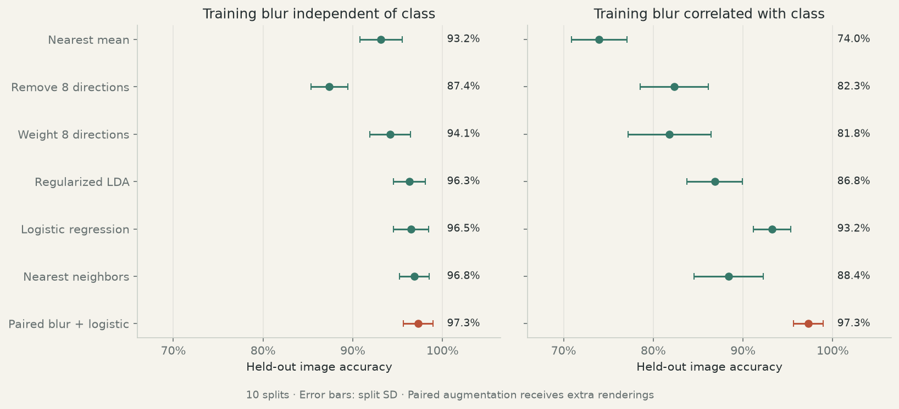

Geometry & structured transforms
Image variation and fitted transformations
Color discovery / shape labels only
Compare recurring variation with a color reference.
The experiment groups colored triangles, squares, pentagons, and hexagons by shape. Random pairs within each group supply image differences. PCA reduces those differences to 20 dimensions; FastICA fits six components. The baseline applies the same PCA/ICA pipeline to the original images without shape labels. The fit requests 40 pairs per shape.
Color and thickness labels are used only after fitting to construct reference directions and score the best absolute cosine alignment. The color reference is the mean red image minus the mean non-red image. Scores describe alignment on this synthetic collection. Color scores are 0.826 with shape labels and 0.716 for the baseline; thickness scores are 0.657 and 0.671.
A / Class-label-based geometry
Find variation within classes.
Digits 3, 5, and 8 supply class labels. PCA is fitted on training images, then the leading eight directions of pooled within-class covariance define the variation subspace. All three classes appear during fitting; original test-image identities are held out.
Variation around each class mean
For each class, subtract its mean before measuring variation. The second moment of pairwise differences, averaged within each class and then weighted by class size, gives twice this covariance and the same directions.
Classification under a blur shortcut
Training blur is either independent of the class or assigned much more often to 3s. Validation and test have independent blur in both cases. Hyperparameters use validation only. Accuracy below is the mean ± split standard deviation.
| Method | Independent training blur | Correlated training blur |
|---|---|---|
| Nearest mean | 93.2 ± 2.4% | 74.0 ± 3.1% |
| Remove variation subspace | 87.4 ± 2.0% | 82.3 ± 3.8% |
| Weight variation subspace | 94.1 ± 2.3% | 81.8 ± 4.6% |
| Regularized LDA | 96.3 ± 1.8% | 86.8 ± 3.1% |
| Logistic regression | 96.5 ± 2.0% | 93.2 ± 2.1% |
| Nearest neighbors | 96.8 ± 1.7% | 88.4 ± 3.9% |
| Paired blur + logistic | 97.3 ± 1.6% | 97.3 ± 1.6% |
Paired augmentation receives both sharp and blurred renderings of the same training identities. Repeated splits overlap across seeds; this is image-level evaluation within one small dataset.

B / Known-answer control
Fit a predefined color operation from examples.
This control assumes a single RGB rotation shared across pixels, then fits its coefficients from before-and-after examples. The competing fixed pixel pattern misses the target color and can add ghost outlines.
A least-squares scalar describes brightness. Orthogonal Procrustes fits one RGB matrix shared across pixels for a 30° color rotation around the gray axis. Both use paired source and target images. A shared additive image vector is fitted on the same pairs.
Ten seeds test the prescribed transformation and three successive applications. Relative squared error is below 10−20 for the fitted shared actions. The known generator law lies inside the proposed model family, making this a controlled class-transfer test.
Before
Original image
The shape and color before editing.
Goal
Requested image
Same outline, with the prescribed color change.
Method A
Add a pixel pattern
Add the average change at each fixed image position.
Method B
Apply a color rule

Convert each pixel’s color, wherever the outline lies.
Where the result misses the target
Each map compares the method’s output with the requested image above.
Largest absolute RGB-channel error per pixel. The same scale is used for both methods and both shapes.
First triangle and cross from test seed 0. Training pairs use a 30° rotation of RGB colors around the gray axis; three steps request a 90° rotation. Images are shown at their original relative intensities, clipped to [0, 1]. Error maps use the unclipped arrays.
C / Learned encoder
Test an action inside a trained representation.
A convolutional autoencoder with 32 coordinates trains on 3,000 synthetic images for 30 epochs, using Adam and pixel mean squared error. Three seeds vary training images and initialization. Nine base configurations fit a gain and offset at brightness ratio 1.5.
From the fitted pair to other multipliers
The six multipliers are 0.5, 0.75, 1.2, 1.5, 2, and 3; starting levels are 0.4 and 0.6. Test identities differ from fitting identities. Shape and color categories overlap encoder training. Targets outside the training intensity range [0.4, 1] remain unclipped and are reported separately.
Relative squared latent error · lower is better
Prediction error is measured relative to the actual encoded change, using all 32 coordinates.
| Encoder / rule | Within training intensity | Outside training intensity |
|---|---|---|
| Trained / fitted scaling action | 0.00388 | 0.00488 |
| Trained / scale about black-image encoding | 0.01126 | 0.01051 |
| Trained / shared shift | 0.91058 | 0.91129 |
| Random / fitted scaling action | 0.41359 | 0.41986 |
Decoded output
The fitted edit's image MSE, divided by the MSE of scaling an ordinary reconstruction, averages 0.989 within and 1.173 outside training intensity. Direct pixel scaling is exact for this synthetic factor. The gallery clips images for display; numerical scoring uses unclipped outputs.
References
Locatello et al. (2020), learning from paired changes. Digit data: Alpaydin & Kaynak, Optical Recognition of Handwritten Digits, used under CC BY 4.0 through scikit-learn.